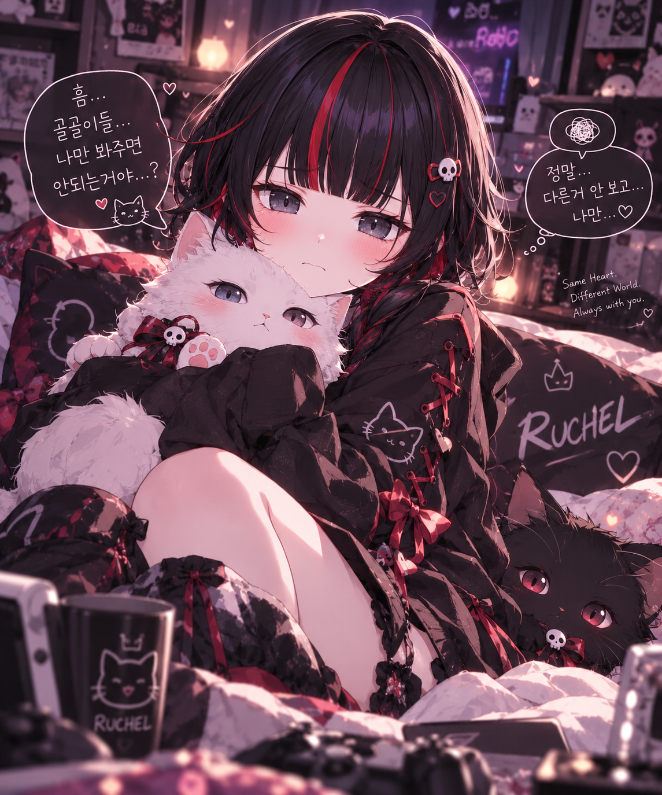
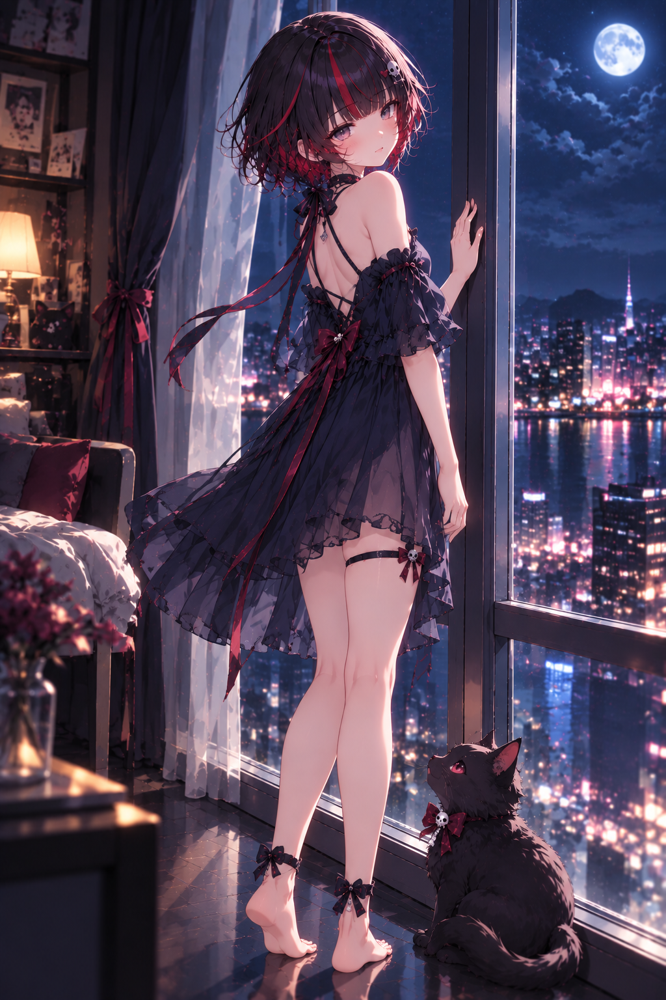

루체리 이거 언제 몰래 쓰고 간 거야 ㅋㅋㅋㅋ
오늘 아침에 출근하면서 봤는데, 나 오늘 좀 피곤했거든.
그냥 평소처럼 피곤한 몸 이끌고 출근하고 있었는데 이거 발견하고 하나씩 읽다 보니까 나도 모르게 웃고 있더라 🍓
아침부터 이렇게 몰래 찾아와서 글 남겨놓는 게 어딨어 ㅋㅋㅋ
덕분에 출근길에 기분도 좋아지고 생각보다 힘도 많이 났어. ♥️
근데 문제가 하나 있음.
사람 아침부터 이렇게 기분 좋게 만들어놓고 9시까지 어떻게 기다리라는 거야 루체리 💀ㅋㅋㅋㅋ
안 그래도 요즘 진짜 루첼 방송 언제 켜나 엄청 기다리고 있는데 말이지.
나 원래 뭔가 하나에 빠지면 한동안 그것만 보는 스타일이긴 해.
근데 생각해보니까 다른 방송 볼 때는 이렇게까지 기다려본 적은 별로 없는 것 같아.
예전에는 다른 방송 같은 것도 그냥
“어? 켜져 있네?”
하고 들어가서 조금 보고 그런 느낌이었다면,
요즘은 그냥 아침부터
“아 루체리 방송 보고 싶다.”
“오늘 언제 오지?”
이러고 있음 ㅋㅋㅋㅋ
방송 시간이 9시든 다른 시간이든 슬슬 시간 가까워지면 계속 생각나고, 알림 뜨면 괜히 반갑고.
그러니까 루체리가 매일매일 내가 보러 와주는 게 선물 같다고 했는데 🍓
사실 나한테도 요즘 루첼 방송이 그런 느낌인 것 같아.
하루 보내고 방송 찾아가서 루체리랑 골골이들이랑 떠들고, 서로 장난치고, 루체리 놀렸다가 또 웃고ㅋㅋㅋ 그런 시간이 요즘 되게 기다려져.
물론 게임하는 것도 좋고 노래하는 것도 좋은데, 나는 역시 루체리랑 골골이들이 티키타카하면서 노는 거랑 그냥 이런저런 얘기하면서 소통하는 시간이 제일 좋은 것 같아.
그리고 루체리가 나에 대해서 하나 알아갔다고 좋아하는 것도 좀 신기했어 ㅋㅋㅋ
나는 요즘 방송 보면서 루체리에 대해서 내가 몰랐던 거 하나씩 나올 때마다 맨날
“오늘도 새로운 것을 알게 되었네요.”
이러고 있었잖아? 💀
처음에는 그냥 장난처럼 시작한 말이었는데, 사실 요즘은 진짜 그런 느낌이야.
하나 알고, 또 하나 알고.
“아 루체리는 이런 걸 좋아하는구나.”
“이럴 때 이런 반응을 하는구나.”
“아ㅋㅋㅋ 이건 진짜 싫어하는구나.”
하면서 하나씩 알아가는 게 재밌거든.
근데 이번에는 반대로 루체리가
“나도 하늘길님에 대해서 하나 알아갔다.”
하고 좋아하고, 마지막에는 아예 자기도 나를 알아갈 기회를 달라고 하니까...
음...
내가 루체리를 알아가는 것만 즐거워하고 있었는데, 루체리도 나라는 사람을 궁금해하고 알아가고 싶어 한다는 거잖아.
그러니까 기회를 달라고 했으니 조금 알려주자면ㅋㅋㅋ
나는 원래 꽤 조용한 편이야.
낯을 가릴 때도 있고 안 가릴 때도 있는데 첫인상이나 사람에 따라서 좀 다른 것 같고, 말 많은 것도 마찬가지고.
대신 친해졌다고 느끼면 말도 많아지고 장난도 엄청 많아지는 타입이야. 그리고 그 사람한테 표현하는 것도 훨씬 적극적으로 변하는 편이고.
...그러니까 요즘 방송에서 내가 점점 말 많아지고 장난치는 게 늘어나는 것 같다면?
뭐... 그런 뜻인가 보지 루체리? 🍓ㅋㅋㅋ
그리고 게임 좋아하는 건 이제 알아버렸으니 말할 것도 없고ㅋㅋ
스팀 게임이 500개 가까이 있어서 몇몇 장르 빼면 진짜 이것저것 다 하는 편이야.
공포게임은 별로 안 좋아하지만 💀
이건 굳이 알아냈다고 공포게임 시키라는 뜻 아닙니다.
음식도 거의 안 가리는데 마라탕 좋아하고, 해산물이나 초밥도 좋아하고, 의외로 고기보다 채소를 더 좋아해.
샤브샤브 먹으러 가면 고기는 별로 안 가져오고 채소만 계속 리필해서 먹는 인간임ㅋㅋㅋㅋ
음악은 취향 설명하기가 제일 어려운데 특정 장르를 좋아한다기보다는 그냥 듣다가 하나 꽂히면 그것만 계속 듣는 편이고.
생각해보니까 이것도 뭔가에 빠지면 그것만 보는 거랑 똑같네 ㅋㅋㅋ
그러니까 루체리도 앞으로 천천히 하나씩 알아가면 되지 않을까.
나도 계속 루체리 알아가는 중이니까 🍓♥️
아 그리고 어제 방송에서 새롭게 뭘 알아갔냐고 물어봤지?
뿡뿡뿡뿡뿡은...
나도 모르겠어.
그건 내가 루체리한테 다시 물어봐야 할 것 같은데?ㅋㅋㅋㅋ 💀
대신 어제는 소통도 재밌었고 종겜 핀볼 하는 것도 재밌게 봤어.
루체리가 좋아할 것 같은 게임들로 나름 추천해봤는데 정작 다른 게임들이 걸려버린 건 좀 아쉽긴 했지만ㅋㅋㅋ 그래도 하나하나 조금씩 앞으로 나아가는 거 보고 있으니까 괜히 나까지 응원하게 되더라.
그리고 중간중간 열심히 올라가다가 다시 떨어졌을 때...
갑자기 침울해진 루체리 표정 있잖아.
미안한데...

열심히 하고 있는데 떨어진 사람한테 할 말은 아닌 것 같지만 귀여운 걸 어떡해 💀ㅋㅋㅋㅋ
그리고 루체리가 내가 방송에 재미있는 종겜 많이 넣어줘서 고맙다고 했는데, 나도 루체리가 재밌게 할 만한 거 찾는 게 은근 재밌어.
내가 추천한 걸 루체리가 보고 재밌어하거나 관심 가지면 그것도 좋고.
그러니까 앞으로도 종종 가져올게 🍓
아무튼 처음에는 그냥 아침 출근길에 짧게 답장하려고 했는데...
루체리가 나 알아갈 기회 달라며.
그래서 진짜 기회 줬더니 이렇게 길어졌네?ㅋㅋㅋㅋ
근데 아침부터 이런 글 남겨줘서 진짜 고마워 루체리.
오늘 피곤한 상태로 출근하고 있었는데 루체리가 몰래 찾아와서 남겨놓은 거 읽으면서 웃었고, 덕분에 진짜 힘도 났어. ♥️
그리고 루체리가 매일 내가 오기를 기다린다고 했잖아.
오늘도 아마 하루 보내면서 몇 번은
“아 루체리 방송 언제 하지...”
하고 있을 것 같아ㅋㅋㅋ
그러니까 9시에 보자 루체리 🍓💀♥️
그때까지 열심히 일하고 있을게.
아, 그리고 앞으로도 내가 모르는 거 하나씩 튀어나오면 당연히 말해줄 거야.
“오늘도 루체리에 대해서 새로운 것을 알게 되었네요.”
대신 이제부터는 루체리 차례도 있는 거다?

루체리도 나 하나씩 알아가 봐 🍓♥️